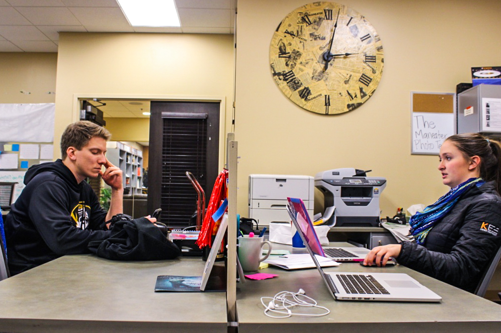
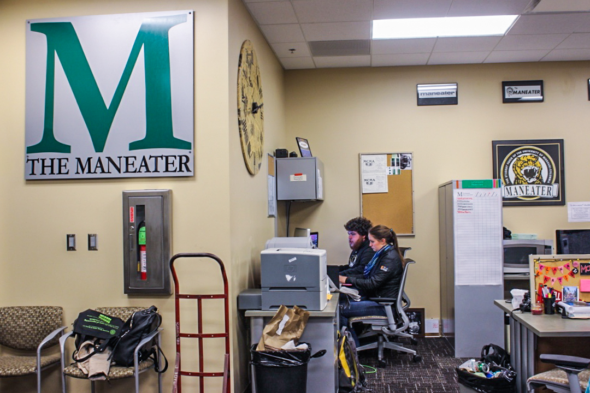
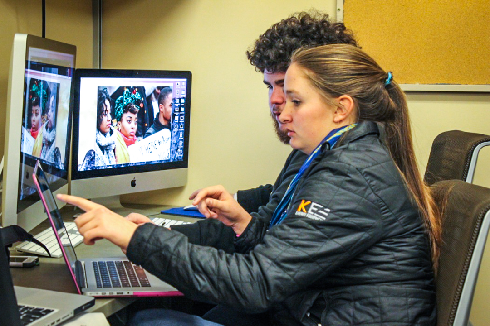
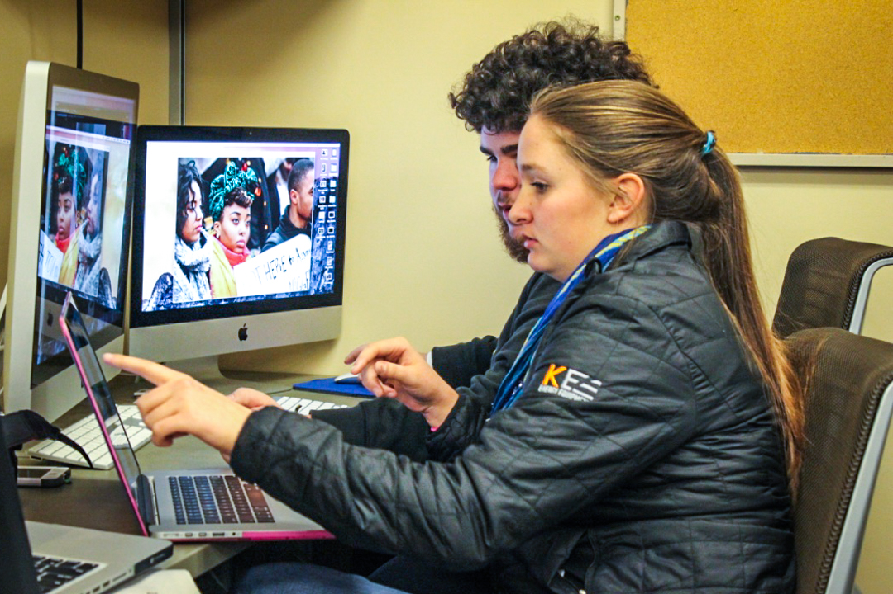
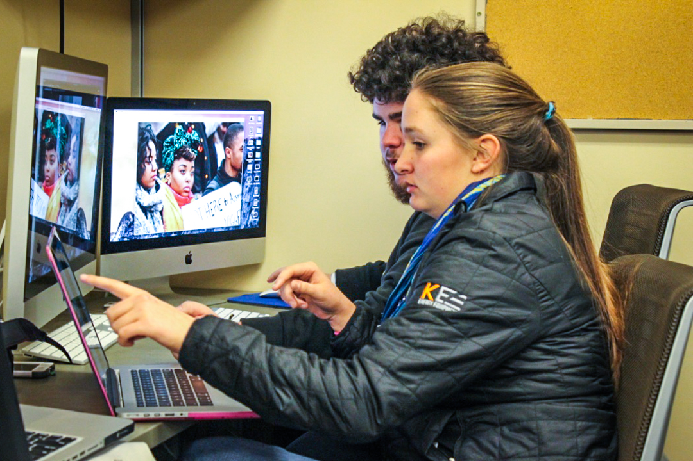
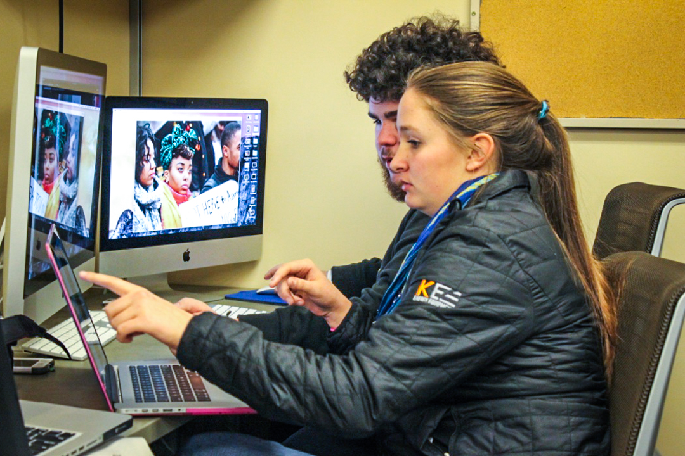

 


 

The Maneater is eager to welcome any new staff member, regardless of previous experience or college major. We offer opportunities including staff writers, photographers and columnists that will enrich your college experience.